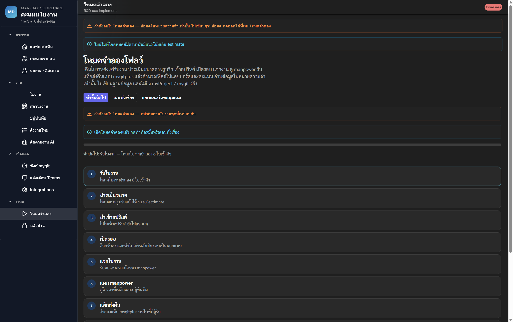
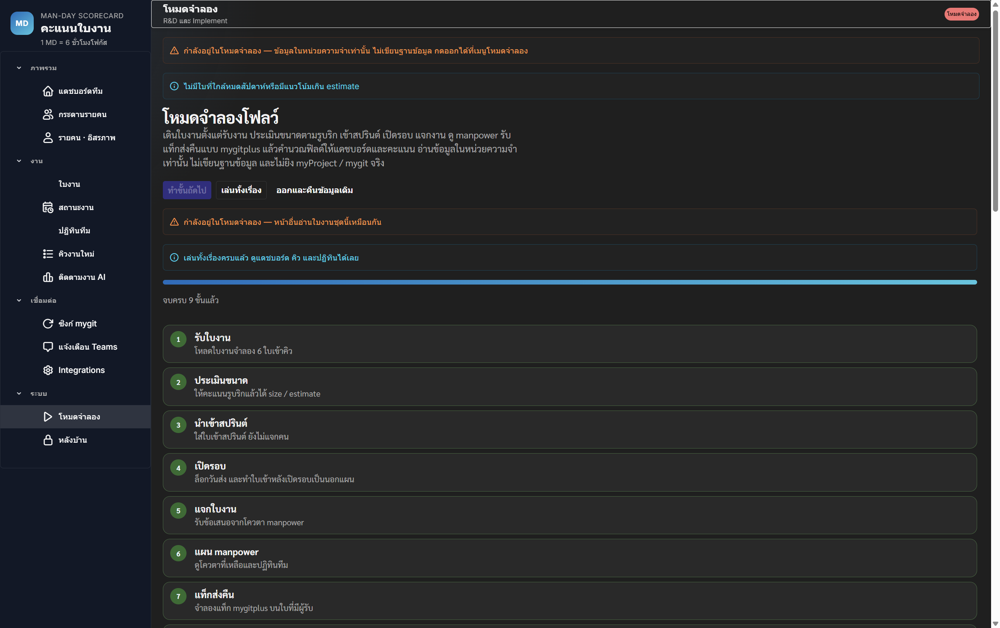
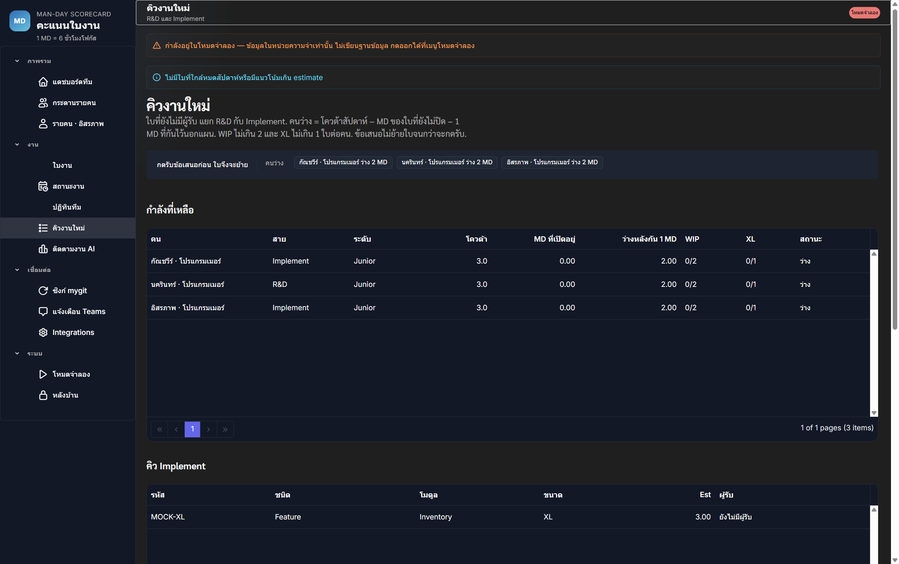
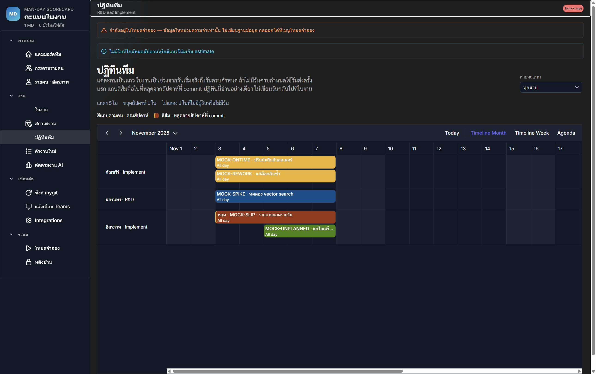
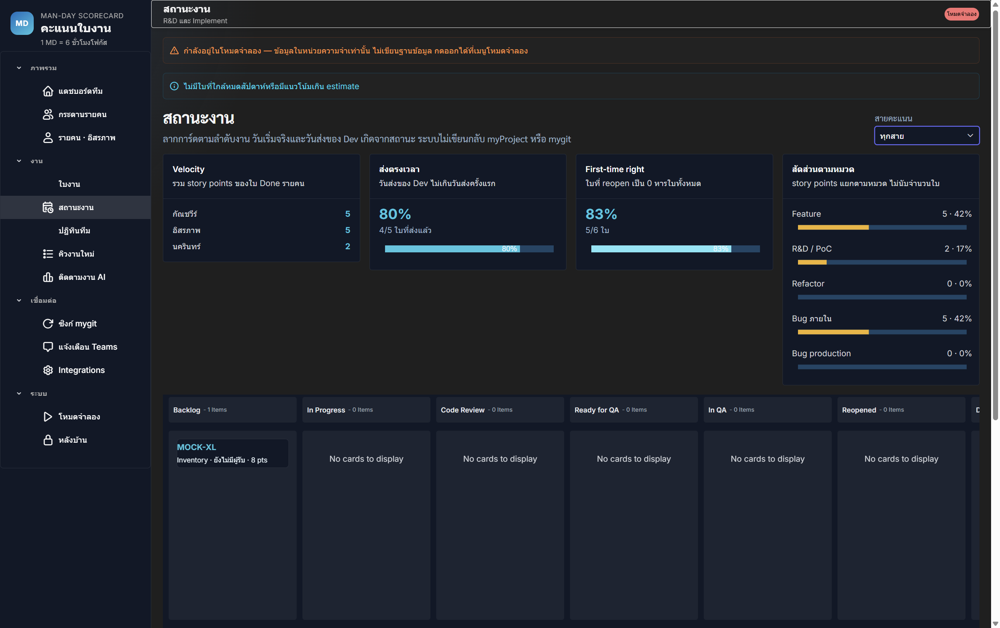
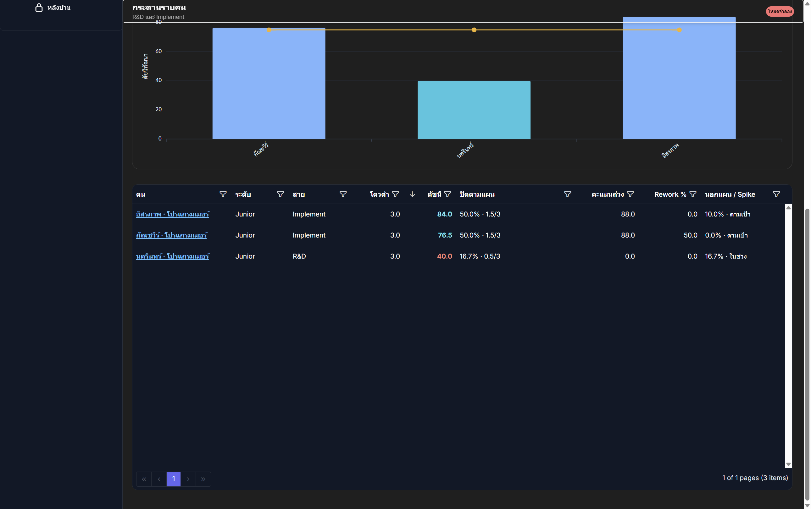
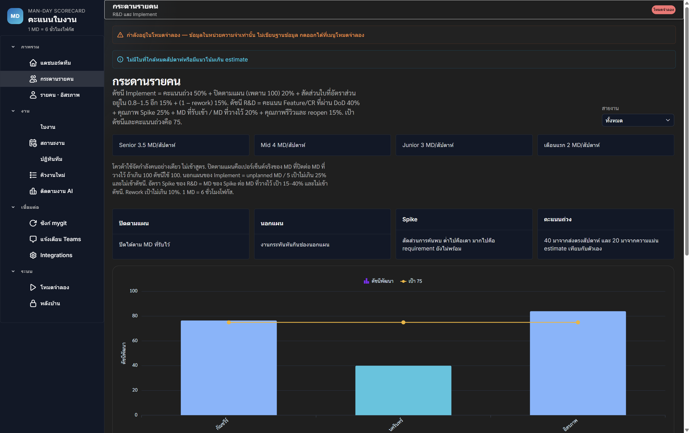
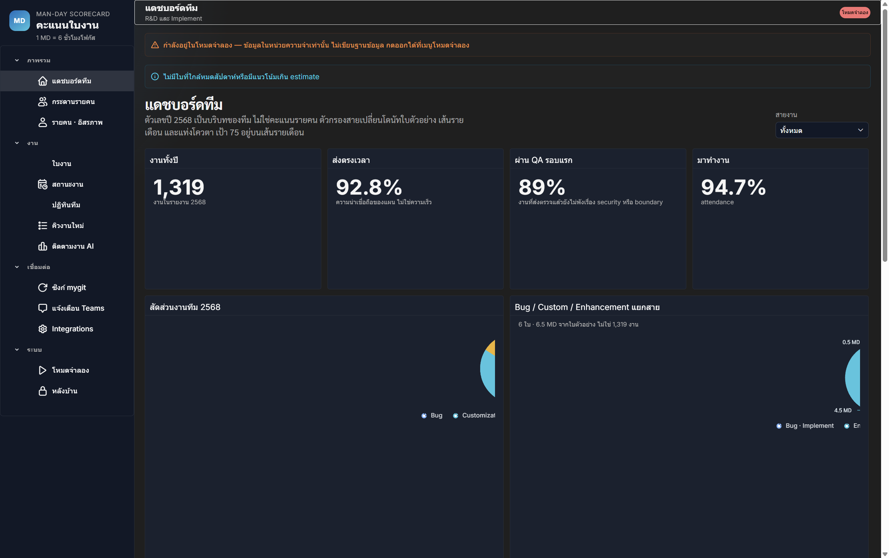

Man-day Scorecard
คู่มือโหมดจำลองโฟลว์
ใบงาน → คะแนน
อธิบายการเปิดโหมดจำลองในหน่วยความจำ เดินใบงานตั้งแต่รับงาน ประเมินขนาดตามรูบริก
เข้าสปรินต์ เปิดรอบ แจกงาน ดู manpower รับแท็กส่งคืนแบบ mygitplus แล้วคำนวณฟิลด์ให้แดชบอร์ดและคะแนน
โดยไม่เขียนฐานข้อมูลและไม่ยิง myProject / mygit จริง
สารบัญ
- จุดประสงค์ของโหมดจำลอง
- เปิดโหมดและเล่นทั้งเรื่อง
- เก้าขั้นของโฟลว์
- ผลบนคิว / ปฏิทิน / ไปป์ไลน์
- แดชบอร์ดรายคนและทีม
- กติกาคะแนนในเรื่องสั้น
- ออกจากโหมด
1. จุดประสงค์ของโหมดจำลอง
โหมดนี้เป็นกระบะทรายในเบราว์เซอร์ ใช้คนตัวอย่าง 3 คน (อิสรภาพ, กัณชวีร์, นครินทร์)
และใบงานจำลอง 6 ใบ เพื่อให้เห็นทั้งเส้นทางก่อนคะแนนโดยไม่แตะข้อมูลจริง
สำคัญ: ขณะเปิดโหมด จะมีแถบสีแดงว่า “โหมดจำลอง” และข้อความเตือนว่าข้อมูลอยู่ในหน่วยความจำเท่านั้น
การแก้ใบงาน / ซิงก์ / เขียน API จะไม่ถูกส่งออกไปจนกว่าจะกดออกจากโหมด
2. เปิดโหมดและเล่นทั้งเรื่อง
- รันเว็บที่
http://127.0.0.1:4200
- เปิดเมนู ระบบ → โหมดจำลอง หรือไปที่
/mockup
- กด เปิดโหมดจำลอง
- กด เล่นทั้งเรื่อง เพื่อรันครบ 9 ขั้นในครั้งเดียว หรือกด ทำขั้นถัดไป ทีละขั้น

ภาพที่ 1 — หน้าโหมดจำลองหลังเปิดโหมด พร้อมปุ่มทำทีละขั้น / เล่นทั้งเรื่อง / ออก

ภาพที่ 2 — หลังเล่นทั้งเรื่อง ระบบขึ้น “จบครบ 9 ขั้นแล้ว” พร้อมตารางรูบริก manpower และคะแนน
3. เก้าขั้นของโฟลว์
- รับใบงาน — โหลดใบจำลองเข้าคิว (ยังไม่รวมงานนอกแผน)
- ประเมินขนาด — ให้คะแนนรูบริก 4 แกน (ขอบเขต / requirement / ระบบภายนอก / regression) แล้วได้ขนาด XS–XL และ estimate MD
- นำเข้าสปรินต์ — ใส่ใบเข้า Mock Sprint W45 (2025-11-03 → 2025-11-07) ยังไม่แจกคน
- เปิดรอบ — ล็อกวันส่ง และเพิ่ม
MOCK-UNPLANNED เป็นงานนอกแผน
- แจกใบงาน — รับข้อเสนอจากโควตา manpower; ใบ XL ที่ใส่ไม่ได้จะค้างคิว
- แผน manpower — ดูโควตาที่เหลือและลิงก์ไปปฏิทินทีม
- แท็กส่งคืน — จำลองแท็ก mygitplus เช่น started / returned / reviewed / reopened / done
- คำนวณฟิลด์ — คิด
actualMd จากชั่วโมง÷6 และ weekOffset จากวันส่งเทียบวันครบกำหนด
- แดชบอร์ดและคะแนน — เปิดหน้าทีม รายคน คิว ปฏิทิน ไปป์ไลน์เพื่อวิเคราะห์
เรื่องสั้น 6 ใบ
| รหัส |
บทบาทในเรื่อง |
ผลที่คาด |
| MOCK-ONTIME |
Feature ส่งตรงสัปดาห์ |
คะแนนใบ 100 |
| MOCK-SLIP |
Feature เลื่อน 1 สัปดาห์ |
คะแนนใบ 80 |
| MOCK-REWORK |
Bug รีวิวหลายรอบแล้ว reopen |
คะแนนใบ 80 |
| MOCK-SPIKE |
Spike ในกรอบเวลา |
คะแนนใบ 100 · spike 100 |
| MOCK-UNPLANNED |
งานนอกแผนหลังเปิดรอบ |
คะแนนใบ 100 · ติดธงนอกแผน |
| MOCK-XL |
XL ใส่โควตา Junior ไม่ได้ |
ค้างคิว ไม่มีผู้รับ |
4. ผลบนคิว / ปฏิทิน / ไปป์ไลน์
คิวงานใหม่ — ใบ XL ค้าง
หลังแจกงาน ใบที่มีผู้รับจะหายจากคิว เหลือ MOCK-XL (3 MD) เพราะโควตา Junior ว่างได้แค่ 2 MD หลังกัน 1 MD นอกแผน

ภาพที่ 3 — คิว Implement เหลือ MOCK-XL และข้อความว่าใส่สัปดาห์นี้ไม่ได้
ปฏิทินทีม — แผนคน
แท่งงานวาดจากวันเริ่มจริงถึงวันครบกำหนด ใบที่เลื่อนสัปดาห์จะขึ้นป้าย “หลุด”

ภาพที่ 4 — ปฏิทินทีมเดือนพฤศจิกายน 2025 มี MOCK-ONTIME / SLIP / REWORK / SPIKE / UNPLANNED
สถานะงาน — คัมบังและ KPI ไปป์ไลน์
ใบที่ปิดแล้วอยู่ในคอลัมน์ Done ส่วน MOCK-XL อยู่ Backlog ตัวเลข on-time / first-time มาจากฟิลด์ที่ settle คำนวณแล้ว

ภาพที่ 5 — สถานะงาน: velocity รายคน, ส่งตรงเวลา 80%, first-time 83%, MOCK-XL ใน Backlog
5. แดชบอร์ดรายคนและทีม
กระดานรายคน
หลัง settle ดัชนีตัวอย่างในเรื่องสั้นนี้คือ:
| คน | สาย | ดัชนี | หมายเหตุ |
|---|
| อิสรภาพ | Implement | 84.0 | มีใบเลื่อนและงานนอกแผน |
| กัณชวีร์ | Implement | 76.5 | มีใบ rework |
| นครินทร์ | R&D | 40.0 | ปิด spike 0.5 MD จากแผน 3 MD |

ภาพที่ 6 — ตารางคะแนนรายคน 3 คนในโหมดจำลอง

ภาพที่ 7 — กระดานรายคนพร้อมกราฟดัชนีและคำอธิบายสูตร
แดชบอร์ดทีม
สรุปใบตัวอย่างในโหมดนี้ควรเป็น 6 ใบ · 6.5 MD
(ใบปิดใช้ actual MD รวม 3.5 และใบ XL ที่ยังเปิดใช้ estimate 3 MD)

ภาพที่ 8 — แดชบอร์ดทีมขณะโหมดจำลอง แสดง 6 ใบ · 6.5 MD และแถบเตือนโหมดจำลอง
6. กติกาคะแนนในเรื่องสั้น
actualMd = ชั่วโมงบนแท็ก done ÷ 6 (โฟกัสชั่วโมงต่อ 1 MD)weekOffset จาก devDeliveredOn เทียบ firstDueOn: ไม่เกินกำหนด = 0, ภายใน 7 วัน = 1, เกินนั้น = 2- คะแนนใบปิดใช้สูตรเดิม: ส่งตรงสัปดาห์ 40 + ความแม่น 0–20 + รีวิว 0–20 + reopen 0–20
- สูตรคะแนนไม่ถูกแก้ในโหมดจำลอง — โหมดนี้แค่เติมฟิลด์ให้สูตรเดิมอ่านได้
ตรวจอัตโนมัติด้วย npm run verify จะยืนยันขนาดจากรูบริก, XL ค้างคิว, และคะแนนใบ MOCK-ONTIME / SLIP / REWORK / SPIKE ตามตารางด้านบน
7. ออกจากโหมด
- กลับหน้า
/mockup
- กด ออกและคืนข้อมูลเดิม
- ระบบคืนคนและใบงานจาก snapshot ก่อนเข้าโหมด และปิดแถบ “โหมดจำลอง”
หากรีเฟรชทั้งหน้าขณะอยู่ในโหมด ข้อมูลจำลองในหน่วยความจำจะหาย และแอปจะโหลด seed/API ใหม่ตามปกติ
ไฟล์ที่เกี่ยวข้อง
| ไฟล์ | หน้าที่ |
|---|
shared/domain/mock-scenario.ts | รูบริก สปรินต์ แท็ก settle เรื่องสั้น |
src/app/core/mock-session.ts | สเต็ปเปอร์และเล่นทั้งเรื่อง |
src/app/pages/mockup/ | หน้า UI โหมดจำลอง |
docs/mockup-guide-screenshots/ | แคปจอประกอบคู่มือนี้ |